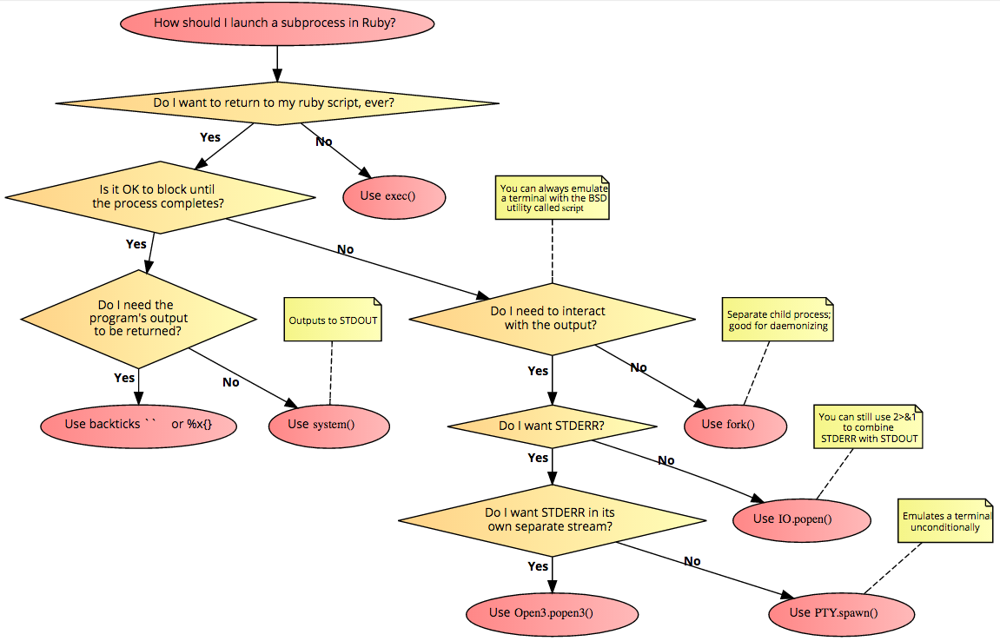

Ruby, Difference between exec, system and %x() or Backticks
What is the difference between the following Ruby methods?
exec, system and %x() or Backticks
I know they are used to execute terminal commands programmatically via Ruby, but I'd like to know why there are three different ways to do this.
Answer
system
The system method calls a system program. You have to provide the command as
a string argument to this method. For example:
>> system("date")
Wed Sep 4 22:03:44 CEST 2013
=> true
The invoked program will use the current STDIN, STDOUT and STDERR
objects of your Ruby program. In fact, the actual return value is either
true, false or nil. In the example the date was printed through the IO
object of STDIN. The method will return true if the process exited with a
zero status, false if the process exited with a non-zero status and nil if
the execution failed.
As of Ruby 2.6, passing exception: true will raise an exception instead of
returning false or nil:
>> system('invalid')
=> nil
>> system('invalid', exception: true)
Traceback (most recent call last):
...
Errno::ENOENT (No such file or directory - invalid)
Another side effect is that the global variable $? is set to a
Process::Status object. This object will contain information about the call
itself, including the process identifier (PID) of the invoked process and the
exit status.
>> system("date") Wed Sep 4 22:11:02 CEST 2013 => true >> $? => #<Process::Status: pid 15470 exit 0>
Backticks
Backticks (``) call a system program and return its output. As opposed to the first approach, the command is not provided through a string, but by putting it inside a backticks pair.
>> `date` => Wed Sep 4 22:22:51 CEST 2013
The global variable $? is set through the backticks, too. With backticks you
can also make use string interpolation.
%x()
Using %x is an alternative to the backticks style. It will return the
output, too. Like its relatives %w and %q (among others), any delimiter
will suffice as long as bracket-style delimiters match. This means %x(date),
%x{date} and %x-date- are all synonyms. Like backticks %x can make use
of string interpolation.
exec
By using Kernel#exec the current process (your Ruby script) is replaced with
the process invoked through exec. The method can take a string as argument.
In this case the string will be subject to shell expansion. When using more
than one argument, then the first one is used to execute a program and the
following are provided as arguments to the program to be invoked.
Open3.popen3
Sometimes the required information is written to standard input or standard
error and you need to get control over those as well. Here Open3.popen3
comes in handy:
require 'open3' Open3.popen3("curl http://example.com") do |stdin, stdout, stderr, thread| pid = thread.pid puts stdout.read.chomp end
Suggest
Here's a flowchart based on this answer. See also, using script to emulate a
terminal.
